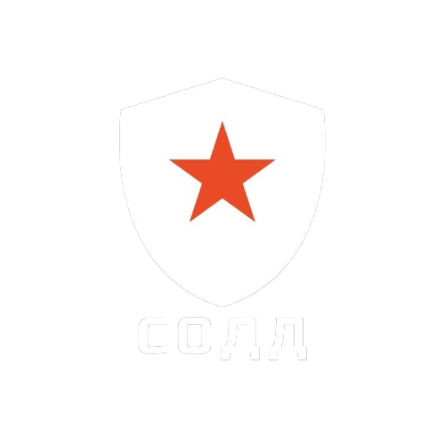
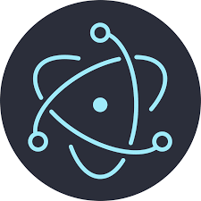

СИСТЕМА ОГРАНИЧЕНИЯ ДОСТУПА К ДАННЫМ «ЩИТ»
Проблема
Вместе с цифровизацией и модернизацией формата работы госструктур Российской Федерации все чаще возникают проблемы утечек данных не только из-за хакерских атак, но и по причине незаконного распространения конфиденциальной информации сотрудниками, халатно относящимися к установленным правилам о неразглашении данных. И если решения первой проблемы уже есть в виде разнообразного антивирусного ПО, то для решения второй была создана Система Ограничения Доступа к Данным (СОДД). В банковском секторе присутствуют системы защиты от действий сотрудников, но это уникальные внутренние разработки конкретных компаний, а мы предлагаем универсальный, независимый и полноценный продукт.
Решение проблемы
Система Ограничения Доступа к Данным (СОДД) «ЩИТ» - продукт, ориентированный на улучшение корпоративной безопасности силовых и иных государственных структур РФ. Включает в себя ПО, использующее биометрические данные, контролирующее все узлы служебных компьютеров и являющееся «обёрткой» над базами данных, которое учитывает и ограничивает все действия, происходящие на рабочем месте сотрудника, имеющего доступ к приватной информации; а так же массовое развертывание этого ПО.
Принцип работы
ПО «ЩИТ» устанавливается на любой служебный компьютер, после чего:
- Допускает в систему только по отпечаткам пальцев, сканам сетчатки глаза, исключая несанкционированный доступ третьих лиц, знающих пароль авторизации;
- Контролирует всё происходящее в операционной системе и ведет отчёт, исключая доступ в нерабочее время, создание снимков экрана и попытки взломать или отправить информацию на другие цифровые носители;
- Контролирует действия сотрудника на рабочем месте, его клавиатуру, мышь, и ведет запись вебкамеры и микрофона, исключая создание фото- и видеоснимков монитора, а также устную передачу информации третьим лицам.
Пример работы
- Для начала работы с приватной информацией происходит запуск ПО «ЩИТ»;
- После требуется прохождение авторизации с использованием биометрических данных;
- При успешной авторизации открывается личный кабинет сотрудника, через который он может взаимодействовать с информацией;
- Параллельно этому начинается съемка вебкамерой и иные виды мониторинга происходящего в рабочей сессии.
Техническая реализация
Десктопное приложение на основе Electron (JavaScript), Swing (Java) или QT (C++)
Биометрическая авторизация с FingerprintJS, SourceAFIS или Adafruite
Видеосъемка с помощью WebRTC, Webcam-capture или QT Multimedia


Преимущества

Надежная защита
СОДД исключает утечки данных, вызванные сотрудниками, ограничивая их действия, с помощью служебного компьютера, и в то же время сам не является уязвимостью, так как ограничен в функционале и работает без подключения к сети Интернет.

Всеобъемлющая поддержка
Пакет СОДД включает в себя круглосуточную поддержку, в том числе очные выезды на предприятие специалистов, всегда готовых перенастроить ПО, исправить все проблемы и ответить на все вопросы, возникающие у сотрудников.

Установка «под ключ»
Сотрудники-установщики приедут в удобное время и оперативно проведут установку и настройку ПО, а также обучат персонал использованию данной системы.

Универсальность
Единый пакет ПО СОДД может удовлетворить потребности совершенно различных структур, использующих приватную информацию, а также устанавливается на операционные системы как семейства Windows, так и Linux.
Оставить заявку
Получить ответы на интересующие вопросы, узнать условия и стоимость подключения